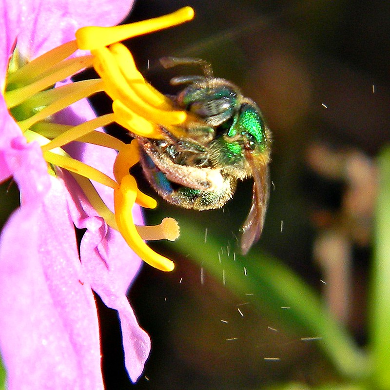

This article was published by Planet Forward on December 7th of 2022.
------------------------------------------------------------
In front of hundreds of researchers at Harvard University, Mario Vallejo-Marin, Ph.D., a professor of biology and environmental science at the University of Sterling in Scotland, stood anxiously and gave an impassioned speech about the challenges he has faced in studying bee pollination. He was looking for solutions that can aid in the fight to protect ever-declining bee biodiversity, and he was open to trying anything. However, the last thing that Vallejo-Marin ever expected was to fly back to Scotland with the idea for a tiny robotic bee flying around in his head.
As Vallejo-Marin spoke to the Harvard scholars in late 2021 about his goal to use a vibrating source to conduct a controlled study on the characteristics of pollination in different species of bees, an eager hand shot up in the audience. The hand belonged to Noah Jafferis, Ph.D., a professor of electrical and computer engineering at the University of Massachusetts. Jafferis felt that he could help Vallejo-Marin achieve his goal by using a completely novel bio-robotic bee to replicate certain types of pollination in experiments. Vallejo-Marin’s first thought was one of skepticism, as the two researchers come from entirely different scientific backgrounds, but the more they talked, the more they realized that their interests seem to intertwine perfectly.
In March 2022, within months of meeting each other, Vallejo-Marin and Jafferis secured an $840,000 grant from the Human Frontier Science Program, an organization that promotes international interdisciplinary research related to living organisms.
“This is one of the best pieces of news that you can receive as a scientist,” Vallejo-Marin said, with excitement in his voice. “Grant writing and getting funds in science is a very difficult process where there is a lot of chance, luck, and being in the right place at the right time.”
Vallejo-Marin’s biology lab in Scotland is filled with the deafening sound of buzzing, which shakes the entire room with high-pitched vibrations. The source of this buzzing becomes clear as Vallejo-Marin walks over to a large tank in the corner of the lab, looking affectionately at the hundreds of yellow and black insects flying and landing on artificial flowers. The focus of this lab is buzz pollination, which is a fairly rare and under-researched type of bee pollination that is vital to the health and fertilization of over 20,000 plant species and crops across the globe.
“Buzz pollination is used on many different plant species, including a number of crops that humans rely on for food sources such as tomatoes and blueberries,” Vallejo-Marin said. Understanding how bees do it and which species do it could improve agriculture and help explain the importance of protecting rare species to maintain bee biodiversity.

Not all bees buzz... pollinate
Only certain bees can buzz pollinate, and only certain plants can be pollinated in this way. Most bees pollinate by landing on flower petals and passively collecting pollen in the hairs on their bodies, which is then spread throughout the area as they fly. However, when the right kind of bee lands on the right kind of flower, the bee will contract the muscles in its thorax and start actively producing vibrations that make the entire flower shake. This motion causes the pollen grains inside to bounce back and forth and eventually shoot out of the flower.
“You can see a shower, almost like a jet stream of pollen coming out of the flower,” Vallejo-Marin said. “This happens in a fraction of a second, and it takes less than a hundred milliseconds for the bees to shake free thousands and thousands of pollen grains.”
The main challenge that Vallejo-Marin has faced throughout his research is determining the morphology of buzz pollinators. This information would allow him to decipher what enables buzz pollinators to biologically pollinate in this way, compared to species of bees that cannot produce buzz vibrations.
“We know very little about what makes a bee buzz a certain way, whether it’s size or speed or ecology or a combination of all of those factors,” Vallejo-Marin said. He has found that it is extremely difficult to replicate the incredibly fast vibrations that a such a tiny insect produces on a flower. This is where Dr. Noah Jafferis comes in, and this is where bee research will take a turn into the unknown.
Creating the prototype
Jafferis has been interested in bio-inspired microrobots since he was in graduate school at Harvard University, where he helped develop a winged microrobot that was able to fly like a bee and simulate some of the aerodynamic aspects of insect flight.
“The wings in those robo-bees were powered by piezoelectric actuators that bend back and forth, similar to the muscles that pull a bee’s wings back and forth,” Jafferis said. “I realized that these same muscles also produce the vibrations for buzz pollination, and my microrobots may be able to help in Mario’s research.”
Piezoelectric actuators are mechanical devices that take electrical energy and convert it directly into linear motion with high speed and force. Unlike larger robotic mechanisms, these actuators would be able to vibrate the body of the micro-robotic bee with extreme accuracy and precision while still maintaining the weight and size of an actual bee. Although the robo-bee pollinators are currently just prototypes, Jafferis is confident that he will be ready to begin the coding process in the near future.
Over the next year, Vallejo-Marin will be using biomechanical equipment to analyze the buzz patterns of different bee species in his lab, even attempting to put tiny monitors directly on the bees to measure their movements during buzz pollination.
“There is a variety of information that Mario will be measuring, such as the frequency and amplitude of the vibrations in buzz pollination, which I can plug directly into our robo-bees and tell that to vibrate with the same frequencies and amplitudes,” Jafferis said.
But, what can these robotic bees actually tell researchers that living bees cannot, and how would the data influence bee conservation and crop production?
Bio-inspired robots have been utilized to study the behavior and anatomy of many animal species in recent decades, and their use is only growing as they are able to provide novel information that scientists have never before been able to retrieve.
“Biomimetic robots enable us to control individuals in experiments, and we can pinpoint differences in the behaviors of live animals, which we cannot do in any other setting,” said David Bierbach, a bio-robotics researcher, in a 2021 press conference at the University of Konstanz.
Jafferis believes that robotics could be the key to achieving detailed analyses of buzz pollination, illustrating how a bee’s characteristics affect their ability to buzz and what types of vibrations are most effective for pollination.
“We can’t tell an actual bee, ‘Hey we want to see what happens if you let go of one of your feet,’ but with a robot we can,” Jafferis said. “We can tell the robots to vibrate and grab flowers and do things in different ways that a bee is not doing on its own.”
The need for bees
Bees are in a current state of worldwide decline, and their biodiversity is suffering in a way that may lead to the complete extinction of certain rare species in the near future.
“We fear bee decline,” said Michael Roswell, Ph.D., an entomologist at the University of Maryland. “With 4,000 species of bees in the United States and 20,000 species on earth, we expect that some will be doing better than others at any given time, but we’re certainly afraid that many rare species are doing worse and worse.”
Roswell published a study in April 2022 that highlighted the importance of rare bees in plant-pollinator networks. He and his team were able to show that less common species, many of which were buzz pollinators, often fertilize plants that more common species do not pollinate at all. Roswell believes that Vallejo-Marin and Jafferis’ study would expand his research in a way that could help to target bee conservation efforts towards the buzz pollinators that are most in need of protection and that are needed most by their ecological environments.
“We are trying to use this project as a platform to help people realize that not all bees are the same and that different bees do different jobs,” Vallejo-Marin said. “It is important to maintain the biodiversity of bees so that not just one or two species are doing well, because every species is vitally important.”
If the robotic bees are able to successfully replicate buzz pollination, they may be able to aid in sustainable methods of crop production as well.
“If one bee species is suffering, the robots could tell us if there is another species that can fill in and pollinate these vital crops instead, or if we need to focus all of our resources on the conservation of that species,” Jafferis said.
The researchers are optimistic that they will eventually be able to pair the optimal bee with the optimal crop, which would not only supply humans with an effective and environmentally conscious method of crop fertilization, but would also help bees to strengthen their populations in areas with bounties of plants that match their pollination styles.
Over the next three years, Vallejo-Marin and Jafferis will be working toward these sizable goals, combining their expertise to create a groundbreaking interdisciplinary device that may be able to positively influence bees, humans, plants, and the environment as a whole.
“It is hard to work with bees and not fall in love with them,” Vallejo-Marin said. “They are such charismatic creatures, and once you care about them you will care about them forever.”
Tags: Biodiversity, Bees, ecology, animals, research, pollinators, nature, biotechnology